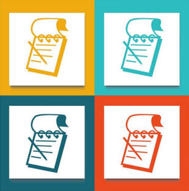

ELT
Concourse teacher training
ELT Concourse home
Teacher training index
In-service training
Initial plus training
The Bridge
Teacher development
Academic management
For teacher trainers
A-Z training index
Language questions
The lists of lists

A number of guides on this site have links to lists of items you may find helpful.
Here is the lists of lists. All documents are in PDF format and open in a new tab.
adjectives masquerading as adverbs
auxiliary verbs
catenative verbs
combining forms
conjunctions
conjuncts
delexicalised or empty verbs
determiners
determiner or pronoun?
diagrams from guides
disjunct adverbs
ditransitive verbs
function words
glossary of basic ELT terms
glossary of grammar (simpler)
glossary of grammar, lexis and phonology
glossary of methodology (simpler)
glossary of methodology and background theory
homophones
irregular verbs
mass nouns
minimal pairs
modal auxiliary verbs
modal expressions
multi-word verbs
noun-verb pairs with shifted stress
other glossaries
partitives and assemblages
phonemes
place adverbs
prepositions
prepositions: patterns of meaning
prepositions: place
prepositions: time
prefixes and suffixes
primary and modal auxiliary verbs
pronouns
quantifiers
reporting verbs (academic writing)
reporting verbs (general English)
testing terminology
theory and methodology glossary
time adverbs
verbs allowing transferred negation
weak forms